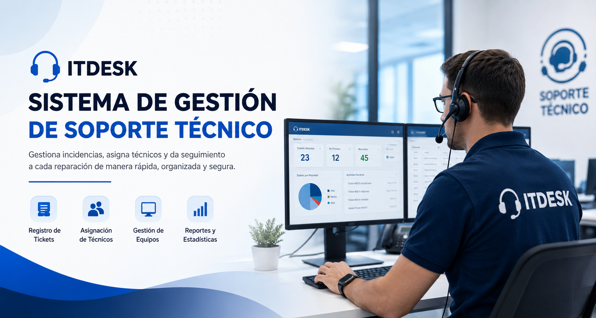

¿Por qué elegir ITDESK?
- ✔ Registro rápido de incidencias.
- ✔ Seguimiento en tiempo real.
- ✔ Asignación eficiente de técnicos.
- ✔ Historial completo de reparaciones.
- ✔ Reportes administrativos.
- ✔ Plataforma segura y fácil de utilizar.

ITDESK es una plataforma diseñada para empresas de tecnología que permite registrar incidencias, administrar tickets de soporte, asignar técnicos y realizar el seguimiento completo de cada reparación de manera rápida, organizada y segura.
Registrarse Registrar Ticket Conocer más
En ITDESK ofrecemos una solución integral para la gestión del soporte técnico dentro de empresas de tecnología. Nuestro sistema facilita el registro de incidencias, la asignación de técnicos especializados y el seguimiento de cada solicitud desde su creación hasta su resolución.
Nuestro objetivo es optimizar los tiempos de respuesta, mejorar la organización del servicio técnico y brindar una experiencia eficiente tanto para los clientes como para el personal de soporte.
Proporcionar una plataforma eficiente para administrar el soporte técnico y garantizar una atención rápida y organizada.
Convertirnos en una solución de referencia para la gestión de servicios de soporte técnico empresarial.
Funcionalidades principales del sistema ITDESK.
Registro de incidencias de computadoras, impresoras y equipos tecnológicos.
Asignación y seguimiento de técnicos responsables de cada ticket.
Gestión de computadoras, impresoras y demás equipos electrónicos.
Estadísticas, historial de tickets y seguimiento del rendimiento.
Nuestro proceso garantiza una atención organizada y eficiente para cada incidencia reportada.
El cliente registra la incidencia del equipo.
El administrador asigna un técnico.
El técnico analiza la falla del equipo.
Se realiza la reparación y se actualiza el estado.
El cliente recibe la confirmación del servicio.
Tickets Registrados
Clientes Activos
Técnicos Especializados
Casos Resueltos
¿Tienes alguna pregunta? Escríbenos.
Santo Domingo, República Dominicana
soporte@itdesk.com
(809) 555-1234
Lunes a Viernes | 8:00 AM - 6:00 PM